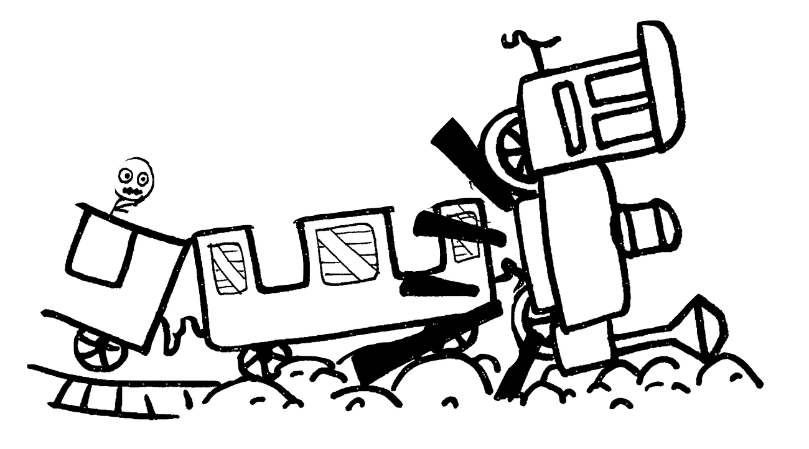

Big Thunder: 1 Death
On September 5, 2003, a 22-year-old man died after suffering severe blunt force trauma and extensive internal bleeding in a derailment of the Big Thunder Mountain Railroad roller coaster that also injured ten other riders.[24] The cause of the accident was determined to be improper maintenance.[25] Investigation reports and discovery by the victim's attorney confirmed the fatal injuries occurred when the first passenger car collided with the underside of the locomotive. The derailment was the result of a mechanical failure which occurred due to omissions during a maintenance procedure. Fasteners on the left side upstop/guide wheel on the floating axle of the locomotive were not tightened and safetied in accordance with specifications. As the train entered a tunnel, the axle came loose and jammed against a brake section, causing the locomotive to become airborne and hit the ceiling of the tunnel. The locomotive then fell on top of the first passenger car, crushing the victim.Some people blamed the new cost-conscious maintenance culture brought in by Paul Pressler and consultants McKinsey & Company in 1997, which included Reliability-centered maintenance.
